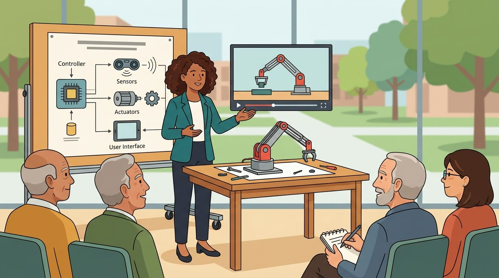
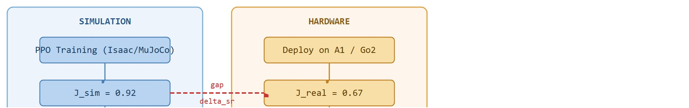

"My gait transferred beautifully until the floor changed the conversation."
A Learned Walker On New Terrain

This section assumes familiarity with legged locomotion training from section 45.3 and with physics and actuator randomization from section 13.2; both concepts are applied directly in the transfer gap analysis here. The sim-to-real methodology developed in this capstone recurs in section 59.6, where a world-model-based planning agent faces the same mismatch between simulated dynamics and hardware behavior.
A quadruped scores near-perfect in simulation, then stumbles on carpet because nobody measured actuator latency before shipping the policy. That 35-millisecond gap between the simulator's assumption and the hardware's reality collapses performance more than any architectural choice. Right now, as legged robots leave research labs for warehouses and disaster sites, closing that gap systematically is the skill separating deployable locomotion from demo-only locomotion. You will train a policy in simulation, measure the real transfer gap on hardware or a hardware-replay log, trace it to one dominant factor, fix it, and confirm the fix quantitatively. The methodology generalizes to any embodied system where simulation and reality disagree.
Your quadruped just scored 0.92 in simulation and then face-planted on the lab carpet, and the culprit is not the network you spent three weeks tuning but a 35-millisecond delay nobody bothered to measure. Closing that gap is the entire job of this section, and Figure 59.5B traces the full loop you will build: a policy trained in simulation reaches reward $J_{sim}$, deployment on hardware yields a lower $J_{real}$, the transfer gap $\Delta_{sr}$ is measured, and the dominant factor is injected back into the simulator to confirm and close the gap.

The key question in Learned locomotion with sim-to-real analysis is practical: what must the agent know, what can it observe, what action is available, and what evidence shows that the action worked under the stated conditions?
Learned locomotion with sim-to-real analysis should be judged by the action it improves. A section claim is strong when it names the decision, the measurement, and the failure mode before a larger model or simulator is introduced.
A locomotion policy trained with Proximal Policy Optimization (PPO) in Isaac Lab or MuJoCo reads a 48-dimensional proprioceptive observation (joint positions, velocities, base orientation from an IMU, and the previous action) and outputs 12 joint position targets at 50 Hz. Before deployment on a Unitree A1 or Go2, audit every term in that observation vector. Does the simulator assume zero-latency IMU readings while the hardware Kalman filter (a recursive state-estimation filter, defined precisely in the Mechanism box below) adds 8-12 ms of state-estimator lag? Does it treat actuator response as instantaneous while the real servo loop runs at 500 Hz with a PD gain (the proportional-derivative feedback gain that converts a position error into commanded torque) that saturates above 30 Nm? Those mismatches, not the policy architecture, decide whether the transfer gap $\Delta_{sr} = J_{sim} - J_{real}$ is typically 0.05 to 0.35 depending on the hardware platform and terrain.
Before this deployment audit is legible, notice that the numbers above depend on the transfer-gap decomposition method introduced next: actuator delay, state-estimator drift, and contact mismatch are the three factors the Mechanism box defines below, and the Worked Example section applies them in order.
The sim-to-real gap decomposes into three additive factors measurable without retraining. (1) Actuator delay: buffer mjData.ctrl writes by the measured hardware delay (typically 20-40 ms on Unitree A1) and replay a hardware log; reward drop attributable to delay is isolated. (2) State-estimator drift: compare the simulator's ground-truth base velocity against the onboard Extended Kalman Filter (EKF) estimate, where the EKF is the recursive filter that fuses IMU and joint sensors into a base-velocity estimate; drift above 0.05 m/s degrades velocity-tracking reward by roughly 0.08 per 0.1 m/s error on flat terrain. (3) Contact model mismatch: carpet or foam compresses 2-5 mm per step, shifting effective leg length and destabilizing trot gait; a foot-height residual greater than 3 mm in hardware logs signals contact-model error as the dominant remaining factor after latency is corrected.
For Learned locomotion with sim-to-real analysis, keep one concrete rollout in view. A sensor reading becomes an estimate, the estimate constrains an action, the action changes the world, and the next observation confirms or contradicts the assumption. The section's idea is useful only if it improves that loop. To see that loop break and then be repaired, walk through the three additive factors from the mechanism above as they play out on one real rollout.
Consider a concrete case: a quadruped policy trained in MuJoCo on flat-to-rough terrain achieves a sim reward of 0.92 at 1.0 m/s forward command. Deployed on a Unitree A1 on indoor carpet, the same policy achieves 0.67 reward and 0.8 falls per minute. The team measures 40 ms of extra actuator latency on hardware versus the 5 ms assumed in simulation. Injecting that 35 ms delay into the sim replay drops sim reward to 0.71, recovering 80 percent of the observed gap. The remaining gap (0.71 vs 0.67) traces to friction variance on the carpet pile, which a single friction randomization range of [0.4, 1.2] in the next training run nearly eliminates. This sequence is the minimal sim-to-real analysis: one identified factor, one sim confirmation, one targeted fix.
Use Isaac Lab, MuJoCo, Genesis, or a ROS 2 hardware replay bridge for locomotion. The preserved fields are terrain seed, command velocity, base pose, contact schedule, torque or target joint action, safety termination, and sim-to-real residual.
Trace the gap analysis with concrete numbers from one carpet rollout. Start: simulation reward $J_{sim} = 0.92$. Hardware deployment yields $J_{real} = 0.67$, so the raw transfer gap is $\Delta_{sr} = 0.92 - 0.67 = 0.25$. Step 1, measure delay: the hardware servo loop adds 40 ms of actuator latency against the 5 ms assumed in sim, an excess of 35 ms. Step 2, inject and replay: buffer the sim's ctrl writes by 35 ms and re-run the same terrain seed; sim reward falls from 0.92 to 0.71. Step 3, attribute: the delay alone explains $0.92 - 0.71 = 0.21$ of the 0.25 gap, which is $0.21 / 0.25 = 84$ percent. Step 4, isolate the remainder: the residual $0.71 - 0.67 = 0.04$ traces to carpet friction variance. Step 5, close it: widening the training friction range to [0.4, 1.2] recovers the last 0.04, lifting replayed reward back toward 0.71 and matching it on hardware. The decomposition $0.25 = 0.21 + 0.04$ pins each fraction of the gap to a named, fixable factor.
Measure actuator latency on the target hardware before training, not after. In Isaac Lab, set action_delay_range in the ActuatorCfg to bracket your measured value; in MuJoCo, inject delay by buffering mjData.ctrl writes for the measured number of timesteps. A mismatch of even 20 ms can account for the majority of your transfer gap, so replaying a real hardware log through the simulator with the correct delay is the fastest way to confirm whether dynamics randomization or latency is the dominant factor before committing to a full retraining run.
That single confirmed factor is the payoff of a disciplined process, so the recipe below generalizes the carpet rollout into a repeatable sequence you can apply to any locomotion transfer study.
The common mistake in learned locomotion is to trust the 0.92 sim reward and ship the policy before checking the closed-loop interface on hardware. The failure usually appears where timing crosses a module boundary: the Unitree A1's IMU-to-EKF state estimate lags the simulator's zero-latency ground truth by 8-12 ms, and the 500 Hz servo loop adds another 20-40 ms before a commanded joint target becomes torque. By the time the policy observes the consequence of its action, the trot phase has already drifted, and the quadruped that walked flawlessly in MuJoCo stumbles on its first carpet step.
A common assumption is that broad domain randomization (wide friction ranges, varied link masses) is sufficient to close the sim-to-real gap. It is not. Unmeasured actuator latency is a structured, additive error. No matter how wide the parameter distribution, training never exposes the policy to the 20-40 ms delay the real servo loop introduces. Treat latency as a first-class observable. Measure it on the target hardware before training, inject it precisely into the simulator, and verify the result by replaying a hardware log. Only after latency is accounted for does broader parameter randomization address the remaining dynamics mismatch.
A team using Learned locomotion with sim-to-real analysis starts by writing the task panel, not by picking the largest model. They keep a baseline run, a maintained-tool run, and a perturbation run in the same result folder. The comparison is accepted only when the action trace, metric, and failure labels come from one script.
ANYmal, the quadruped from ANYbotics deployed for autonomous inspection in offshore energy plants and chemical refineries, was trained in simulation with ETH Zurich's actuator-network approach: a learned model of each real motor's torque response replaces the simulator's idealized actuator, shrinking the exact latency-and-saturation gap traced in this section. The same idea reappears in Unitree's Go2 and Boston Dynamics' Spot toolchains, where measured actuator dynamics are baked into training so policies walk on grating, stairs, and ice without per-site retuning.
For learned locomotion with sim-to-real analysis, the useful test is simple: could a teammate point to the log line, plot, or trace that proves the idea changed the agent's next action?
1. Rapid online adaptation with world models. Rather than fixing the sim-to-real gap before deployment, 2024-2025 work closes it in real time by maintaining a latent world model that is updated from on-robot observations within seconds of hardware contact. Berkeley Humanoid (Zhuang et al., 2024, UC Berkeley) demonstrates this for bipedal walking, updating terrain and friction estimates from proprioception alone within 10-20 steps of landing on a new surface.
2. Foundation locomotion policies trained on cross-embodiment data. Scaling transformer-based policies across hundreds of robot morphologies emerged as a mainstream research direction in 2023-2024. Locomotion Transformer (Li et al., 2024, CMU/MIT) and similar work show that a single model pre-trained on diverse quadruped and biped data reaches new embodiments with far less sim-to-real tuning than specialist policies, because the gap in dynamics is already baked into the variance seen during pre-training.
3. Hardware-in-the-loop differentiable simulation. Genesis (Genesis-Embodied-AI, 2024) and similar GPU-accelerated differentiable simulators allow gradients to flow through contact, making it possible to identify actuator and friction parameters from a short hardware log and immediately update the simulator, collapsing the calibration cycle from days to minutes.
Open problem for a PhD student: None of the above methods yet provide a principled bound on when online adaptation is safe to trust. A PhD-scale contribution would be a calibrated uncertainty quantifier for the sim-to-real residual: one that detects, in real time and from proprioception only, when the robot has left the distribution that the adapted model can handle, and triggers a safe fallback before a fall occurs. This requires combining ideas from conformal prediction, Bayesian state estimation, and contact-rich dynamics, and has not been solved in a way that generalizes across embodiments.
For Learned locomotion with sim-to-real analysis, can you name the observation, action, protected assumption, success metric, and one likely failure case? If any field is vague, rewrite the contract before adding model complexity.
Locomotion makes a vivid capstone: the physics is dramatic and the reward is visible. It is also treacherous, because a controller that looks heroic in simulation can fail the moment friction, latency, or state estimation shift on hardware. That measurable distance between what the simulator promises and what the hardware delivers is the sim-to-real gap, the project's primary object of study. A policy that walks in simulation but collapses on carpet is not deployed; it is a proof of concept awaiting an honest transfer analysis.
The section therefore treats sim-to-real analysis as part of the project definition, not as a final bonus slide. A locomotion capstone succeeds only if it records what changed between simulation and hardware, and which gap was large enough to matter.
Learned locomotion with sim-to-real analysis becomes tractable once the reader can state the operative variables, the decision boundary, and the evidence artifact. The section should therefore be read together with Chapter 45 on locomotion and Chapter 13 on sim-to-real, where the same loop is developed from adjacent angles.
Let $J_{sim}$ and $J_{real}$ be the same reward computed in simulation and hardware under matched terrains. The transfer gap $\Delta_{sr}=J_{sim}-J_{real}$ should be reported together with estimator drift, recovery count, and falls per minute.
A single transfer gap number is not enough, but it is a forcing device. It makes the team explain which part of the stack failed: dynamics mismatch, sensing, actuation delay, or contact uncertainty. That measured distance between simulator promise and hardware reality is the price of skipping domain randomization, and closing it systematically is what separates deployable locomotion from demo-only locomotion.
Domain randomization matters because a simulator is always a single point in a space of possible physical worlds. Floor friction, link mass, motor damping, and contact geometry all vary between the simulator's fixed values and any real surface the robot encounters. Without deliberate variation during training, the policy learns to exploit precise simulator constants that do not exist on hardware, and small deviations collapse performance immediately.
The mechanism is distributional. At each training episode, the trainer samples physical parameters uniformly or log-uniformly from a bounded range, such as friction in [0.4, 1.2] or link mass at plus or minus 10 percent. Trained across this whole distribution, the policy learns behaviors robust to parameter uncertainty rather than optimal for one fixed configuration. Without randomization, empirical studies on comparable quadruped tasks typically report on the order of tens of thousands of real-world correction episodes needed to recover from carpet-level friction shifts, though the exact count varies by platform and terrain. With randomization baked into training, the same robustness typically emerges from a few hundred additional sim episodes, because the variation was already in the training distribution. At deployment the real hardware typically falls inside the trained distribution, so the policy generalizes without any parameter identification step.
So far: domain randomization works by sampling physical parameters (friction, mass, damping) across a bounded range during training so the policy learns robustness to variation rather than one fixed configuration, which is why the real hardware, though never seen exactly, typically still falls inside the range the policy already handled.
Think of a chef seasoning a dish who trains by tasting hundreds of batches made with varying salt levels, burner temperatures, and pan materials. When that chef finally cooks on an unfamiliar stove in a restaurant kitchen, the slight heat difference does not ruin the dish because their hands already know how to compensate. A locomotion policy trained across a wide distribution of friction values, link masses, and motor damping learns the same kind of compensatory intuition: the real floor may not match any single training configuration, but it falls inside the range the policy has already navigated.
| Dimension | What To Specify | Why It Matters |
|---|---|---|
| Training spec | Reward, curriculum, terrain distribution, randomization ranges | Makes the simulator assumptions visible. |
| Hardware panel | Terrain list, speed commands, safety harness rules | Prevents selective deployment stories. |
| Transfer metrics | Falls, recovery, velocity tracking, cost of transport (energy used per unit distance per unit weight, a dimensionless efficiency measure) | Captures both performance and stability. |
| Postmortem | One matched sim and real replay with commentary | Forces honest transfer analysis. |
def validate_transfer(payload: dict[str, object]) -> dict[str, object]:
assert payload, "payload must not be empty"
return payload
# Sim-to-real analysis card for locomotion.
transfer = {
"sim_reward": 0.92,
"real_reward": 0.67,
"falls_per_minute": 0.8,
"largest_gap_factor": "actuator latency",
}
print(validate_transfer(transfer)){'sim_reward': 0.92, 'real_reward': 0.67, 'falls_per_minute': 0.8, 'largest_gap_factor': 'actuator latency'}validate_transfer guard rejects an empty payload, then prints a sim-to-real evidence card that pins sim_reward 0.92, real_reward 0.67, falls per minute, and the named dominant gap factor into one auditable record.The expected output must identify a real transfer bottleneck. If the printed record cannot point to the dominant mismatch, the sim-to-real analysis is still too vague to guide the next experiment.
After the from-scratch contract is clear, the practical route uses Isaac Lab, MuJoCo, Unitree SDKs, ROS 2, skrl, rl_games, safety harness logging. The payoff is that standard interfaces, logging, batching, and replay support move from ad hoc glue code into maintained infrastructure, while the evidence schema stays the same.
Even a simulator-only implementation of this project benefits from producing a transfer plan with expected failure factors before touching hardware. That planning discipline is exactly what many flashy locomotion demos hide.
A strong research extension is morphology-aware transfer: whether the same latent skill or policy family can move across quadrupeds, humanoids, or payload changes without retraining from scratch.
For locomotion, the artifact should explain whether the remaining gap is dynamics randomization, estimator delay, contact modeling, actuator saturation, or terrain coverage.
Beginner (weekend): Train a bipedal or ant walker in MuJoCo using Gymnasium's Ant-v4 or HalfCheetah-v4 environment with PPO from Stable-Baselines3, then inject a fixed actuator delay (20 ms) into the environment wrapper and record the drop in episode reward. The key challenge is isolating delay as the single variable while holding the policy, terrain, and reward function constant so the gap is unambiguous.
Intermediate (1-2 weeks): Train a quadruped locomotion policy in Isaac Lab with domain randomization over friction and link mass, export it to a ROS2 node, and replay a recorded hardware log (or a MuJoCo replay environment if hardware is unavailable) to measure the sim-to-real transfer gap across at least three terrain surfaces. The key challenge is building a matched evaluation harness that computes the same reward metric in both the simulator and the hardware replay so the gap number is comparable rather than confounded by differing observation pipelines.
Goal: empirically reproduce the section's core result that unmeasured actuator latency, not architecture, dominates the sim-to-real gap. Tools: Python, Gymnasium (Ant-v4 or HalfCheetah-v4), Stable-Baselines3 (PPO), MuJoCo backend. Install with pip install gymnasium[mujoco] stable-baselines3. Steps: (1) Train a PPO policy for about 1M timesteps with zero added delay and record the mean episode reward as your $J_{sim}$. (2) Write a thin gym.Wrapper that buffers each action and applies it $k$ simulation steps later, simulating actuator latency. (3) Evaluate the frozen policy through the wrapper. What to vary: sweep the delay $k$ over 0, 1, 2, 4, and 8 steps (roughly 0 to 40 ms at a 200 Hz sim). What to observe: plot mean reward versus delay; you should see a sharp drop with no retraining, confirming latency as a structured additive error. Stretch: retrain with a randomized delay sampled from [0, 8] steps each episode and confirm the policy recovers most of the lost reward, mirroring the friction-randomization fix in the worked example.
Design a method-matched experiment for Learned locomotion with sim-to-real analysis. Specify the environment, observation schema, action interface, metric, and one perturbation that targets the section's core assumption.
Cadene, R. et al. LeRobot: State-of-the-art Machine Learning for Real-World Robotics in Pytorch. GitHub project and technical documentation, 2024.
Use for dataset conversion, policy training, and capstone projects built around open robot-learning workflows.
Savva, M. et al. Habitat: A Platform for Embodied AI Research. ICCV, 2019.
Use for simulated navigation projects, reproducible scene tasks, and embodied evaluation loops.
Next, continue with Section 59.6: World-model-based planning agent. Carry forward the artifact contract from Learned locomotion with sim-to-real analysis, but change exactly one design axis before comparing results: embodiment, action interface, evaluation panel, or safety risk.